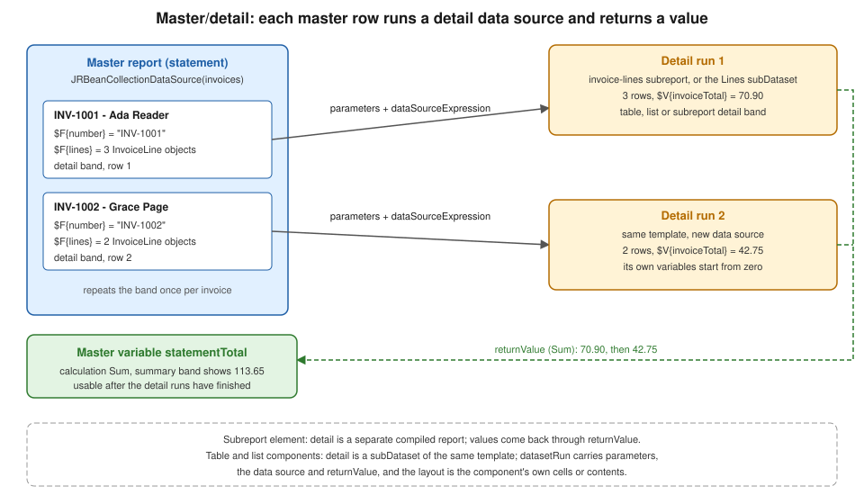

Subreports, Datasets, Tables & Lists
|
This content was generated with the assistance of AI and should be verified against the official documentation before being relied on in production. |
Baseline date: 2026-10-09. A report that prints one flat list of rows is the easy case. The customer statement of the
Bookshelf Billing service is not flat: it lists every invoice of a customer, and under each invoice the books that were
billed. That is a master/detail layout, and JasperReports 7.0.8 has three ways to build one: the subreport element,
which runs a second, separately compiled report for every master row; a subDataset read through a datasetRun, which
lets a component iterate other data inside the same template; and the two components that use a dataset run, the table
and the list. This page shows each with the same statement data, compiles and fills the examples, and explains how values
travel down to the detail (parameters, data sources, connections) and back up (return values). The design of bands and
elements is covered in JRXML Report Design, expressions and
variables in
Expressions, Parameters, Fields & Variables,
and the other data sources in Data Sources & Query Executers.
The examples were compiled and run with Java 21 and JasperReports 7.0.8, and the PDFs were checked by extracting their
text. All templates use the v7 JRXML format (<element kind="...">, no namespace). Templates written for 6.x, including
those that declare a table as a componentElement in the components namespace, do not load in 7.0 and have to be
converted with Jaspersoft Studio 7.
Three ways to build a master/detail layout
The figure shows what the three have in common. The master report iterates its own data source, and for every row a detail runs with data derived from that row (here, the lines of one invoice). What the detail produces can flow back to the master as a value.

| Mechanism | What the detail is | Use it when |
|---|---|---|
|
A complete report with its own parameters, fields, variables, groups, bands and page settings, compiled separately. |
The detail is a reusable layout, needs several bands, or is shared by more than one master. |
|
Only data: parameters, fields, variables, groups and a query, without any layout. Used by an element that supplies the layout. |
A component, chart or crosstab needs data other than the main data source of the template. |
Table component |
A |
The detail is tabular, and column headers, group headers and footers, or spanning cells are needed. |
List component |
A |
The detail is a simple repeated block, vertical or horizontal, and a separate template would be overkill. |
The data used in this page
The master data source is a list of invoices, and every invoice carries its lines. The classes are plain Java beans with
getters, because the bean data source reads properties through getters. A Java record fails with an
Error retrieving field value from bean message (checked with 7.0.8; the record workarounds are in
Generating Reports from Databases & Services), so these
classes are ordinary classes.
<dependencies>
<dependency>
<groupId>net.sf.jasperreports</groupId>
<artifactId>jasperreports</artifactId>
<version>7.0.8</version>
</dependency>
<dependency>
<groupId>net.sf.jasperreports</groupId>
<artifactId>jasperreports-pdf</artifactId>
<version>7.0.8</version>
</dependency>
<dependency>
<groupId>net.sf.jasperreports</groupId>
<artifactId>jasperreports-fonts</artifactId>
<version>7.0.8</version>
</dependency>
<dependency>
<groupId>net.sf.jasperreports</groupId>
<artifactId>jasperreports-jdt</artifactId>
<version>7.0.8</version>
</dependency>
</dependencies>The four artifacts are explained in Getting Started with Spring Boot. Nothing on this page needs Spring: the same classes are used from a controller or a scheduled job without change.
package bookshelf;
import java.time.LocalDate;
import java.util.List;
public class Invoice {
private final String number;
private final String customer;
private final LocalDate issuedOn;
private final List<InvoiceLine> lines;
public Invoice(String number, String customer, LocalDate issuedOn, List<InvoiceLine> lines) {
this.number = number;
this.customer = customer;
this.issuedOn = issuedOn;
this.lines = lines;
}
public String getNumber() {
return number;
}
public String getCustomer() {
return customer;
}
public LocalDate getIssuedOn() {
return issuedOn;
}
public List<InvoiceLine> getLines() {
return lines;
}
}package bookshelf;
import java.math.BigDecimal;
public class InvoiceLine {
private final String title;
private final String category;
private final int quantity;
private final BigDecimal unitPrice;
public InvoiceLine(String title, String category, int quantity, BigDecimal unitPrice) {
this.title = title;
this.category = category;
this.quantity = quantity;
this.unitPrice = unitPrice;
}
public String getTitle() {
return title;
}
public String getCategory() {
return category;
}
public int getQuantity() {
return quantity;
}
public BigDecimal getUnitPrice() {
return unitPrice;
}
public BigDecimal getAmount() {
return unitPrice.multiply(BigDecimal.valueOf(quantity));
}
}package bookshelf;
import java.math.BigDecimal;
import java.time.LocalDate;
import java.util.List;
public final class Sample {
private Sample() {
}
public static List<Invoice> invoices() {
return List.of(
new Invoice("INV-1001", "Ada Reader", LocalDate.of(2026, 9, 3), List.of(
new InvoiceLine("The Pragmatic Programmer", "Software", 1, new BigDecimal("39.90")),
new InvoiceLine("Dune", "Fiction", 2, new BigDecimal("9.50")),
new InvoiceLine("Cosmos", "Science", 1, new BigDecimal("12.00")))),
new Invoice("INV-1002", "Grace Page", LocalDate.of(2026, 9, 10), List.of(
new InvoiceLine("Neuromancer", "Fiction", 1, new BigDecimal("8.75")),
new InvoiceLine("Clean Architecture", "Software", 1, new BigDecimal("34.00")))));
}
}Subreports
A subreport is a report embedded in a band of another report. The master must supply the subreport with a design (the
expression element), a data source or connection, and values for its parameters, and it can receive values back.
The detail template
The detail report below prints the lines of one invoice. It has no query: its data comes from the master. It also declares
a parameter, which the master fills, and a Sum variable that the master will read.
<jasperReport name="invoice-lines" language="java" whenNoDataType="AllSectionsNoDetail" pageWidth="515" pageHeight="842"
columnWidth="515" leftMargin="0" rightMargin="0" topMargin="0" bottomMargin="0">
<parameter name="INVOICE_NUMBER" class="java.lang.String"/>
<field name="title" class="java.lang.String"/>
<field name="quantity" class="java.lang.Integer"/>
<field name="unitPrice" class="java.math.BigDecimal"/>
<field name="amount" class="java.math.BigDecimal"/>
<variable name="invoiceTotal" calculation="Sum" class="java.math.BigDecimal">
<initialValueExpression><![CDATA[java.math.BigDecimal.ZERO]]></initialValueExpression>
<expression><![CDATA[$F{amount}]]></expression>
</variable>
<detail>
<band height="16">
<element kind="textField" x="20" y="0" width="300" height="16">
<expression><![CDATA[$F{title}]]></expression>
</element>
<element kind="textField" x="320" y="0" width="40" height="16" hTextAlign="Right">
<expression><![CDATA[$F{quantity}]]></expression>
</element>
<element kind="textField" x="360" y="0" width="70" height="16" hTextAlign="Right" pattern="#,##0.00">
<expression><![CDATA[$F{unitPrice}]]></expression>
</element>
<element kind="textField" x="430" y="0" width="85" height="16" hTextAlign="Right" pattern="#,##0.00">
<expression><![CDATA[$F{amount}]]></expression>
</element>
</band>
</detail>
<summary height="18">
<element kind="textField" x="230" y="2" width="200" height="14" bold="true" hTextAlign="Right">
<expression><![CDATA["Invoice " + $P{INVOICE_NUMBER} + ":"]]></expression>
</element>
<element kind="textField" x="430" y="2" width="85" height="14" bold="true" hTextAlign="Right" pattern="#,##0.00">
<expression><![CDATA[$V{invoiceTotal}]]></expression>
</element>
</summary>
</jasperReport>Three details matter. The page width is the same as the subreport element in the master (515 points) and the margins are
zero, so the content lines up with the master. The variable has an initial value of zero, and whenNoDataType is
AllSectionsNoDetail: a subreport that gets an empty data source prints nothing by default and returns null for its
variables, which in the test run turned the master’s Sum total into null for an invoice without lines. With these two
settings the same invoice printed its summary and returned 0.00.
The master template
The master iterates the invoices. In the detail band it prints the invoice header and the subreport element.
<jasperReport name="statement" language="java" pageWidth="595" pageHeight="842"
columnWidth="515" leftMargin="40" rightMargin="40" topMargin="40" bottomMargin="40">
<parameter name="LINES_REPORT" class="net.sf.jasperreports.engine.JasperReport"/>
<field name="number" class="java.lang.String"/>
<field name="customer" class="java.lang.String"/>
<field name="lines" class="java.util.Collection"/>
<variable name="statementTotal" calculation="Sum" class="java.math.BigDecimal">
<initialValueExpression><![CDATA[java.math.BigDecimal.ZERO]]></initialValueExpression>
</variable>
<title height="34">
<element kind="staticText" x="0" y="0" width="515" height="28" fontSize="18" bold="true">
<text><![CDATA[Bookshelf customer statement]]></text>
</element>
</title>
<detail>
<band height="44" splitType="Stretch">
<element kind="textField" x="0" y="0" width="515" height="18" bold="true">
<expression><![CDATA[$F{number} + " - " + $F{customer}]]></expression>
</element>
<element kind="subreport" x="0" y="20" width="515" height="20" positionType="Float">
<expression><![CDATA[$P{LINES_REPORT}]]></expression>
<dataSourceExpression><![CDATA[new net.sf.jasperreports.engine.data.JRBeanCollectionDataSource($F{lines})]]></dataSourceExpression>
<parameter name="INVOICE_NUMBER">
<expression><![CDATA[$F{number}]]></expression>
</parameter>
<returnValue subreportVariable="invoiceTotal" toVariable="statementTotal" calculation="Sum"/>
</element>
</band>
</detail>
<summary height="30">
<element kind="textField" x="230" y="6" width="200" height="20" bold="true" hTextAlign="Right">
<expression><![CDATA["Statement total:"]]></expression>
</element>
<element kind="textField" x="430" y="6" width="85" height="20" bold="true" hTextAlign="Right" pattern="#,##0.00">
<expression><![CDATA[$V{statementTotal}]]></expression>
</element>
</summary>
</jasperReport>The subreport element has four parts.
-
expressionevaluates to the subreport’s design. Here it is the$P{LINES_REPORT}parameter, which holds a compiledJasperReportobject, the form that avoids loading and compiling on every master row. The expression can also return aString(the default; the engine tries it as a URL and then as a file name, so the official sample uses the name of a compiled.jasperfile), aFile, anInputStreamor aURL, and a conditional expression can choose a different subreport for different rows. -
dataSourceExpression(orconnectionExpression) supplies the detail data. The expressionnew JRBeanCollectionDataSource($F{lines})wraps the collection held in the master’s$F{lines}field, whose class is declared asjava.util.Collection. For a subreport that runs a SQL query on the same connection as the master, the official documentation recommends$P{REPORT_CONNECTION}as the connection expression. A subreport with no data of its own can be given aJREmptyDataSource. -
parameterelements pass values down. Each one names a parameter that must be declared in the subreport and gives an expression evaluated in the master, here the invoice number. AparametersMapExpressioncan pass a whole map instead. -
returnValueelements pass values up, covered below.
The element has positionType="Float" so that it moves down if the text above it stretches. The API also exposes
usingCache, runToBottom and overflowType on the subreport element, which are described in the Javadoc of the
JRDesignSubreport class.
Filling the report
The Java side compiles both templates once, because a compiled JasperReport is thread safe and compilation is slow, and
puts the compiled subreport in the parameter map.
package bookshelf;
import java.io.IOException;
import java.io.InputStream;
import java.util.HashMap;
import java.util.List;
import java.util.Locale;
import java.util.Map;
import net.sf.jasperreports.engine.JRException;
import net.sf.jasperreports.engine.JRParameter;
import net.sf.jasperreports.engine.JasperCompileManager;
import net.sf.jasperreports.engine.JasperExportManager;
import net.sf.jasperreports.engine.JasperFillManager;
import net.sf.jasperreports.engine.JasperReport;
import net.sf.jasperreports.engine.data.JRBeanCollectionDataSource;
public class StatementReport {
private final JasperReport statement;
private final JasperReport invoiceLines;
private final JasperReport statementTables;
public StatementReport() throws JRException, IOException {
// Compile once: compilation is slow, and a compiled JasperReport can be shared by threads.
this.statement = compile("/reports/statement.jrxml");
this.invoiceLines = compile("/reports/invoice-lines.jrxml");
this.statementTables = compile("/reports/statement-tables.jrxml");
}
private JasperReport compile(String resource) throws JRException, IOException {
try (InputStream in = getClass().getResourceAsStream(resource)) {
return JasperCompileManager.compileReport(in);
}
}
/** Master report with one subreport per invoice. */
public byte[] renderWithSubreport(List<Invoice> invoices) throws JRException {
Map<String, Object> parameters = new HashMap<>();
parameters.put("LINES_REPORT", invoiceLines);
parameters.put(JRParameter.REPORT_LOCALE, Locale.ENGLISH);
return export(statement, parameters, invoices);
}
/** Same data, laid out with a table and a list that read a subDataset. */
public byte[] renderWithTables(List<Invoice> invoices) throws JRException {
Map<String, Object> parameters = new HashMap<>();
parameters.put(JRParameter.REPORT_LOCALE, Locale.ENGLISH);
return export(statementTables, parameters, invoices);
}
private byte[] export(JasperReport report, Map<String, Object> parameters, List<Invoice> invoices)
throws JRException {
var dataSource = new JRBeanCollectionDataSource(invoices);
return JasperExportManager.exportReportToPdf(JasperFillManager.fillReport(report, parameters, dataSource));
}
public static void main(String[] args) throws Exception {
var report = new StatementReport();
java.nio.file.Files.write(java.nio.file.Path.of("statement-subreport.pdf"),
report.renderWithSubreport(Sample.invoices()));
java.nio.file.Files.write(java.nio.file.Path.of("statement-tables.pdf"),
report.renderWithTables(Sample.invoices()));
}
}Notes about the code. The parameter map is a HashMap, not Map.of(...), because the engine writes into it and an
immutable map fails with UnsupportedOperationException (checked with 7.0.8). The locale is passed through the built-in
REPORT_LOCALE parameter so that numbers do not depend on the server’s default locale: with a Spanish default locale the
test run, on a machine whose default locale uses a decimal comma, printed 70,90 where this configuration printed 70.90. The subreport inherits the master’s locale. In the run
the two invoices printed their lines, the invoice totals 70.90 and 42.75 came out of the subreports, and the master
summary printed 113.65.
Derived from the JasperReports subreport sample,
the JRDesignSubreport API
and the JasperFillManager API.
Return values
A returnValue copies a variable of the subreport into a variable of the master after the subreport finishes. Its
attributes are subreportVariable (the variable in the subreport, which may be a built-in one such as REPORT_COUNT),
toVariable (the variable in the master) and calculation. The default calculation is Nothing, which assigns the value
directly. With Sum, as in the example, the master variable accumulates one value per subreport execution, so after the
last invoice statementTotal holds the sum of all invoice totals.
Two points are easy to miss. The master variable is only up to date after the subreport element has been processed, so
read it where the subreport has already run, such as the summary band used here. And the value is the one the subreport has when it ends, so a subreport that printed no data returns the
variable’s initial value (or null if it has none), which is why the example sets an initial value.
What a subreport costs
By default each subreport execution is run in its own thread, using the
net.sf.jasperreports.engine.fill.JRThreadSubreportRunnerFactory, which the
net.sf.jasperreports.subreport.runner.factory property selects. The official documentation describes an alternative based
on continuations that needs an extra library. More important in practice is that a subreport runs once for every master row,
so a statement with 10,000 invoices runs the detail 10,000 times. For a handful of master rows with a few detail lines that
is fine. When the master has many rows, prefer one query with a group in the master, or a table or list component, which
need no separate template. The sample also points to the list element and subdatasets
as the alternative to a subreport when only the data differs.
The official documentation states that subreports can be nested; every level is another fill for each row of the level above.
Subdatasets and dataset runs
A dataset in JasperReports is a data source together with the parameters, fields, variables, groups and query that go with
it. The report itself has one implicit dataset, the main dataset. A subDataset (declared as a dataset element in v7
JRXML) is another one, with no bands: it describes data, not layout. Declaring it has no effect until a chart, crosstab,
table or list references it. Each reference creates a dataset run, which supplies:
-
the data source (
dataSourceExpression) or database connection (connectionExpression), or neither when the dataset has a query that can use the report’s connection; -
values for the dataset’s parameters, through
parameterelements or aparametersMapExpression; -
optionally
returnValueelements that copy a dataset variable into a report variable, with the samecalculationsemantics as a subreport.
The dataset used in this page’s table and list declares everything they need.
<dataset name="Lines">
<parameter name="CURRENCY" class="java.lang.String"/>
<field name="title" class="java.lang.String"/>
<field name="category" class="java.lang.String"/>
<field name="quantity" class="java.lang.Integer"/>
<field name="unitPrice" class="java.math.BigDecimal"/>
<field name="amount" class="java.math.BigDecimal"/>
<sortField name="category"/>
<variable name="lineSum" calculation="Sum" class="java.math.BigDecimal">
<initialValueExpression><![CDATA[java.math.BigDecimal.ZERO]]></initialValueExpression>
<expression><![CDATA[$F{amount}]]></expression>
</variable>
<variable name="categoryTotal" calculation="Sum" resetType="Group" resetGroup="category" class="java.math.BigDecimal">
<expression><![CDATA[$F{amount}]]></expression>
</variable>
<group name="category">
<expression><![CDATA[$F{category}]]></expression>
</group>
</dataset>The dataset has its own fields, its own variables (lineSum totals all the lines of one run, categoryTotal restarts for
each category group) and a group. A group needs sorted data, so the dataset sorts the rows with sortField, for the run. Fields declared in the dataset are the columns of the data source of the run, not the
fields of the master: inside a table cell, $F{title} is the line’s title, not a master field. The master’s fields stay
available in the expressions of the dataset run itself, such as in dataSourceExpression. The same dataset can be
referenced from several components of the same report, and each reference is an independent run with its own variable
values.
The Datasets part of the crosstab sample is the official description of subdatasets and dataset runs (it is written for charts and crosstabs, and tables and lists use the same mechanism). Charts are covered in Charts, and groups and sorting in Groups, Sorting & Filtering.
Derived from the JasperReports crosstabs sample, Datasets section
and the JRDatasetRun API.
The table component
The table component is a grid whose rows come from a dataset run. It is placed in a band as a generic element,
<element kind="component">, containing <component kind="table">. It is a better fit than a subreport for the
statement’s lines because it provides column headers, a table header spanning columns, group rows and totals without a
second template.
Structure
A table has a datasetRun and a list of columns. Each column is either kind="single" or kind="group"; a group contains
other columns, including nested groups, and acts as one column for its headers and footers. Every column declares a
mandatory width and may declare these cells, each with a mandatory height:
-
tableHeaderandtableFooter, printed once for the table (for a column group they span all its columns); -
columnHeaderandcolumnFooter, printed once for each column, below the table header and above the table footer; -
groupHeaderandgroupFooter, one per dataset group name, printed when the group starts and ends; -
detailCell, which a single column declares and which is printed once for each row of the dataset.
Cells can have a style, a rowSpan, and any number of report elements that fit inside the cell: an element that does
not fit is rejected at compile time (Element reaches outside table detail contents width, seen in the test run when a
column was narrowed without resizing its elements). A column also accepts a printWhenExpression. Table-wide, a noData
cell can be declared and chosen with whenNoDataType.
The statement table
The master template below prints one table per invoice. Its first column holds the book title and the category group header, the second is a column group titled Price that contains quantity, unit price and amount, and the amount column has a group footer with the category subtotal and a column footer with the invoice total.
<jasperReport name="statement-tables" language="java" pageWidth="595" pageHeight="842"
columnWidth="515" leftMargin="40" rightMargin="40" topMargin="40" bottomMargin="40">
<style name="TableHeader" mode="Opaque" backcolor="#E6E6E6" bold="true" fontSize="10"/>
<variable name="statementTotal" calculation="Sum" class="java.math.BigDecimal">
<initialValueExpression><![CDATA[java.math.BigDecimal.ZERO]]></initialValueExpression>
</variable>
<dataset name="Lines">
<parameter name="CURRENCY" class="java.lang.String"/>
<field name="title" class="java.lang.String"/>
<field name="category" class="java.lang.String"/>
<field name="quantity" class="java.lang.Integer"/>
<field name="unitPrice" class="java.math.BigDecimal"/>
<field name="amount" class="java.math.BigDecimal"/>
<sortField name="category"/>
<variable name="lineSum" calculation="Sum" class="java.math.BigDecimal">
<initialValueExpression><![CDATA[java.math.BigDecimal.ZERO]]></initialValueExpression>
<expression><![CDATA[$F{amount}]]></expression>
</variable>
<variable name="categoryTotal" calculation="Sum" resetType="Group" resetGroup="category" class="java.math.BigDecimal">
<expression><![CDATA[$F{amount}]]></expression>
</variable>
<group name="category">
<expression><![CDATA[$F{category}]]></expression>
</group>
</dataset>
<field name="number" class="java.lang.String"/>
<field name="customer" class="java.lang.String"/>
<field name="lines" class="java.util.Collection"/>
<title height="34">
<element kind="staticText" x="0" y="0" width="515" height="28" fontSize="18" bold="true">
<text><![CDATA[Bookshelf statement with tables]]></text>
</element>
</title>
<detail>
<band height="110" splitType="Stretch">
<element kind="textField" x="0" y="0" width="515" height="18" bold="true">
<expression><![CDATA[$F{number} + " - " + $F{customer}]]></expression>
</element>
<element kind="component" x="0" y="22" width="515" height="40" positionType="Float">
<component kind="table" whenNoDataType="NoDataCell">
<datasetRun subDataset="Lines">
<parameter name="CURRENCY">
<expression><![CDATA["EUR"]]></expression>
</parameter>
<dataSourceExpression><![CDATA[new net.sf.jasperreports.engine.data.JRBeanCollectionDataSource($F{lines})]]></dataSourceExpression>
<returnValue fromVariable="lineSum" toVariable="statementTotal" calculation="Sum"/>
</datasetRun>
<column kind="single" width="215" weight="3">
<tableHeader height="18" style="TableHeader">
<element kind="staticText" x="0" y="0" width="215" height="18">
<text><![CDATA[Title]]></text>
</element>
</tableHeader>
<groupHeader groupName="category">
<cell height="16">
<element kind="textField" x="0" y="0" width="215" height="16" bold="true">
<expression><![CDATA[$F{category}]]></expression>
</element>
</cell>
</groupHeader>
<detailCell height="16">
<element kind="textField" x="10" y="0" width="205" height="16">
<expression><![CDATA[$F{title}]]></expression>
</element>
</detailCell>
</column>
<column kind="group" width="300" weight="2">
<tableHeader height="18" style="TableHeader">
<element kind="textField" x="0" y="0" width="300" height="18" hTextAlign="Center">
<expression><![CDATA["Price (" + $P{CURRENCY} + ")"]]></expression>
</element>
</tableHeader>
<column kind="single" width="80">
<columnHeader height="16" style="TableHeader">
<element kind="staticText" x="0" y="0" width="80" height="16" hTextAlign="Right">
<text><![CDATA[Quantity]]></text>
</element>
</columnHeader>
<detailCell height="16">
<element kind="textField" x="0" y="0" width="80" height="16" hTextAlign="Right">
<expression><![CDATA[$F{quantity}]]></expression>
</element>
</detailCell>
</column>
<column kind="single" width="110">
<columnHeader height="16" style="TableHeader">
<element kind="staticText" x="0" y="0" width="110" height="16" hTextAlign="Right">
<text><![CDATA[Unit]]></text>
</element>
</columnHeader>
<detailCell height="16">
<element kind="textField" x="0" y="0" width="110" height="16" hTextAlign="Right" pattern="#,##0.00">
<expression><![CDATA[$F{unitPrice}]]></expression>
</element>
</detailCell>
</column>
<column kind="single" width="110">
<columnHeader height="16" style="TableHeader">
<element kind="staticText" x="0" y="0" width="110" height="16" hTextAlign="Right">
<text><![CDATA[Amount]]></text>
</element>
</columnHeader>
<groupFooter groupName="category">
<cell height="16">
<element kind="textField" x="0" y="0" width="110" height="16" hTextAlign="Right" italic="true" pattern="#,##0.00">
<expression><![CDATA[$V{categoryTotal}]]></expression>
</element>
</cell>
</groupFooter>
<columnFooter height="16" style="TableHeader">
<element kind="textField" x="0" y="0" width="110" height="16" hTextAlign="Right" pattern="#,##0.00">
<expression><![CDATA[$V{lineSum}]]></expression>
</element>
</columnFooter>
<detailCell height="16">
<element kind="textField" x="0" y="0" width="110" height="16" hTextAlign="Right" pattern="#,##0.00">
<expression><![CDATA[$F{amount}]]></expression>
</element>
</detailCell>
</column>
</column>
<noData height="16">
<element kind="staticText" x="0" y="0" width="515" height="16" italic="true">
<text><![CDATA[No lines on this invoice]]></text>
</element>
</noData>
</component>
</element>
<element kind="component" x="0" y="90" width="515" height="16" positionType="Float">
<component kind="list" printOrder="Vertical">
<datasetRun subDataset="Lines">
<dataSourceExpression><![CDATA[new net.sf.jasperreports.engine.data.JRBeanCollectionDataSource($F{lines})]]></dataSourceExpression>
</datasetRun>
<contents height="14">
<element kind="textField" x="0" y="0" width="515" height="14" fontSize="9">
<expression><![CDATA["- " + $F{quantity} + " x " + $F{title}]]></expression>
</element>
</contents>
</component>
</element>
</band>
</detail>
<summary height="30">
<element kind="textField" x="230" y="6" width="200" height="20" bold="true" hTextAlign="Right">
<expression><![CDATA["Statement total:"]]></expression>
</element>
<element kind="textField" x="430" y="6" width="85" height="20" bold="true" hTextAlign="Right" pattern="#,##0.00">
<expression><![CDATA[$V{statementTotal}]]></expression>
</element>
</summary>
</jasperReport>The pieces to notice:
-
The
datasetRunpassesCURRENCYto the dataset parameter, which the table header reads as$P{CURRENCY}, and gives the lines of the current invoice as data source. ItsreturnValuecopies the dataset’slineSuminto the report variablestatementTotal, which is summed over all invoices and printed in the summary band as113.65in the test run. -
Group cells are written
<groupHeader groupName="category"><cell height="16">...</cell></groupHeader>: the group name is an attribute and the cell, with its height, is a child. Writing the height on thegroupHeaderelement is a mistake that the v7 parser rejects (Unrecognized field "height", seen in the test run). -
whenNoDataType="NoDataCell"with anoDatacell prints a message when an invoice has no lines. The allowed values areBlank(the default),NoDataCellandAllSectionsNoDetail. WithAllSectionsNoDetailand no data, the test run printed the headers and the group cells withnulltext, which is why this example uses thenoDatacell. -
The table height in the element (
height="40") is only the starting point: the table grows with its rows, and the element below it usespositionType="Float"to move down.
Resizing columns
Release 7.0.2 added three controls to the table component, and 7.0.5 added a convention for proportional columns. The
release notes in changes.txt list them, and the configuration reference defines the properties:
-
weighton a column (propertynet.sf.jasperreports.components.table.column.weight, since 7.0.2) states how a column takes part when the columns are resized to occupy the whole width of the table element. -
shrinkWidthon the table (propertynet.sf.jasperreports.components.table.shrink.width, defaulttrue, since 7.0.2) states whether the table box shrinks when the visible columns are narrower than the box, for instance when a column’sprintWhenExpressionhides it. -
horizontalPositionon the table (propertynet.sf.jasperreports.components.table.horizontal.position, defaultLeft, since 7.0.2) places the columns inside the element box:Left,CenterorRight. -
7.0.5 added support for proportional resizing with negative weight values. The release note does not define the convention further and it was not tested for this page, so read the Javadoc and the Jaspersoft Studio help before using negative weights.
A small test showed the effect of weights. A table inside a 515 point element with columns totalling 380 points stayed 380
points wide when no column had a weight. The same table with weights on its columns filled the 515 points of the element.
The statement-tables template above declares weights, but its columns already total 515, so they change nothing in this
example. The cells of a column still have to fit inside the column’s declared width, so resizing is done by the engine at
fill time and not by editing the elements.
Derived from the JasperReports table sample,
the TableComponent API
and the configuration reference.
Tables in PDF
The configuration reference lists table properties whose names point to tagged PDF, such as
net.sf.jasperreports.components.table.generate.pdf.tags and net.sf.jasperreports.components.table.accessible. In 7.0.8
tagged PDF output needs the Professional edition, so with the open-source library the table is exported as ordinary page
content, which was not examined further for this page. The export options are in
PDF Export Configuration.
The list component
The list component repeats a block of elements for every row of a dataset run. It is the data-only counterpart of a
subreport: no second template, no page settings, only a layout for one entry. It is declared as
<component kind="list"> with a datasetRun and a contents element.
<element kind="component" x="0" y="90" width="515" height="16" positionType="Float">
<component kind="list" printOrder="Vertical">
<datasetRun subDataset="Lines">
<dataSourceExpression><![CDATA[new net.sf.jasperreports.engine.data.JRBeanCollectionDataSource($F{lines})]]></dataSourceExpression>
</datasetRun>
<contents height="14">
<element kind="textField" x="0" y="0" width="515" height="14" fontSize="9">
<expression><![CDATA["- " + $F{quantity} + " x " + $F{title}]]></expression>
</element>
</contents>
</component>
</element>This fragment is the last element of the detail band in the table template above; it printed the "2 x Dune" style lines
under each invoice’s table. printOrder is Vertical (the default) or Horizontal. In a horizontal list each entry goes
to the right of the previous one, which gives a row of cards or labels, and the ignoreWidth flag controls whether the
list breaks when the list’s width is reached (the list breaks by default). contents has a mandatory height for every
entry and an optional width. Any report element can be inside the contents, including a frame, an image or another
component, so a list entry can be a small block with a border and several fields.
Because the entries share one dataset, the list sees the same sort order, groups and variables as the table next to it.
The list shown here is sorted by category, since the dataset has a sortField, which is why the "2 x Dune" line (Fiction)
comes before the Software title in the test output.
Derived from the JasperReports list sample.
Choosing between them
-
A tabular detail with headers, totals or group rows: use the table component.
-
A repeated block without headers, or a horizontal strip of entries: use the list component.
-
A detail with its own page header, several bands or a layout shared with other reports: use a subreport.
-
Detail data that is different from the master’s and must be queried per row: any of the three, but a dataset run supports a query or a data source in the template, and a subreport also supports the connection of the master.
-
Very large masters: avoid per-row subreports. Join in the query, group in the master, or use a table with a single dataset run for the whole master.
What the examples produce
With JasperReports 7.0.8 on Java 21, the templates of this page give the following results:
-
The master and subreport templates, filled from a
JRBeanCollectionDataSourceof two invoices and exported to PDF, show the invoice headers, their lines, the subreport totals70.90and42.75and the master total113.65. -
The table and list template, filled with the same data, shows the category group headers, the subtotals, the table footers, the list entries and the
113.65returned from the dataset run. -
An invoice with no lines prints
0.00totals in the subreport version, with the two settings described above, and thenoDatatext in the table version. -
Column weights behave as described in the resizing section. Negative weights, horizontal lists, nested subreports and the continuation-based subreport runner are not covered by these examples.